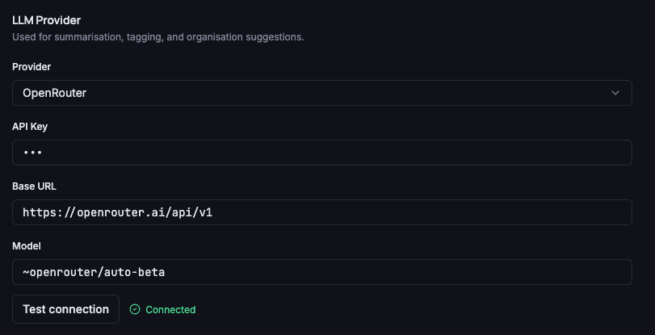
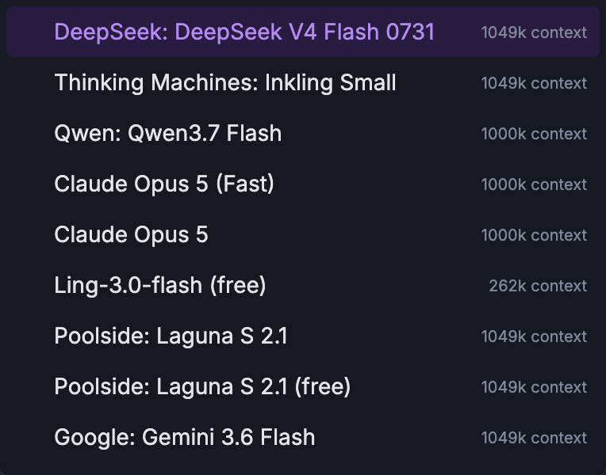
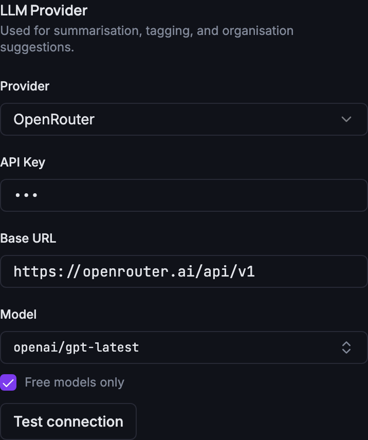

Grimoire Task Report
AI Provider Model Picker

Before
The Model field for every AI provider was a free-text input. For OpenRouter the placeholder taught users a model slug that does not appear anywhere in OpenRouter’s own dashboard: ~openai/gpt-latest, with a mysterious leading ~. Picking a model meant knowing exact slugs such as google/gemini-3.5-flash-lite by heart.

~ prefix in the placeholder.Problem
Model discovery required external knowledge, and the ~ prefix looked like a typo. It is actually OpenRouter’s optional “fallback” marker (if the model is unavailable, OpenRouter may substitute any other model) — valid but unnecessary, and it contradicts what the dashboard shows. The daemon passes the model string to OpenRouter verbatim, so nothing depends on the prefix.
Changes Added
- New daemon endpoint
GET /settings/ai-models?provider=openrouter&free=true|falseproxying the public OpenRouter catalog (free-only filtering done on zero pricing, 15s timeout, http(s) validation, defensive model mapping; 400 for unsupported providers, 422 for an invalid saved base URL, 502 for upstream failures). - OpenRouter model field is now a searchable combobox (
src/components/ui/combobox.tsx, reusable) populated from the catalog, with a Free models only toggle (default on), custom-slug entry, loading spinner, and error + retry states. - Legacy
~-prefixed stored values are stripped on load; defaults and placeholders are nowopenai/gpt-latest. Typing a~-prefixed slug manually still works. - API contract schemas and route definition added;
API.md,docs/api-contract.json, anddocs/openapi.jsonregenerated vianpm run docs:api. - Review hardening: the endpoint requires the
X-LittleImp-Frontendheader (preventing blind cross-site triggers of outbound fetches), rejects private-host base URLs and private redirect targets via the sharedisPrivateHostguard, never echoes upstream error bodies to the client, caps response size and relayed model count, acceptsbase_urlvalues already ending in/models, and the catalog is refetched after a settings save so a changed base URL takes effect immediately.
Result
Users can search the live OpenRouter catalog (hundreds of models, filtered to free ones by default), see display names and context sizes, or type any custom slug — no more memorising model IDs and no more ~ in defaults.


Verification
bun test daemon/— 501 pass (incl. 14ai-models.test.tsintegration tests covering the free filter, mapping, custom base URL, query/hash stripping, unsupported provider, upstream failures, invalid saved base URL, the frontend-header requirement, private-host refusal, and a no-credentials assertion).npx vitest run src/— 325 pass (incl. 5 new Settings picker tests, afetchAiModelsAPI unit test, and 9 Combobox unit tests).npx playwright test— 26 pass.npm run lint,npm run type-check,npm run docs:api:check,npm run build— clean.- Screenshots captured against a live isolated daemon + real OpenRouter catalog (desktop, open picker, mobile 390×844 @2x).
Implementation Notes
The endpoint lives under the Settings tag in the API contract and is served by daemon/src/routes/settings.ts with catalog logic isolated in daemon/src/ai/models-catalog.ts so other providers (e.g. Ollama /api/tags) can be added later without touching the route. The daemon caches nothing; the frontend query cache (5-minute staleTime) covers repeated fetches. The combobox trigger needs an explicit aria-label because the WAI-ARIA accname spec does not use text content to name role="combobox" elements. jsdom test setup gained ResizeObserver and scrollIntoView stubs for cmdk.
Files Changed
daemon/src/ai/models-catalog.ts— newdaemon/src/lib/base-url.ts— shared strict base-URL normalizerdaemon/src/routes/settings.ts— GET /settings/ai-models (422 on invalid saved base URL)daemon/src/api/contract.ts— AiModel/AiModelCatalog schemas + routedaemon/src/api/types.ts— DTO exportsdaemon/src/settings.ts— default model without~daemon/src/test/integration/ai-models.test.ts— newsrc/components/ui/combobox.tsx— newsrc/lib/api.ts—fetchAiModelsclientsrc/pages/Settings.tsx— OpenRouter picker, free filter, tilde strippingsrc/pages/Settings.test.tsx,src/components/ui/combobox.test.tsx,src/hooks/use-settings.test.tsx,src/test/setup.ts,e2e/api-fixtures.tsAPI.md,docs/api-contract.json,docs/openapi.json— regenerated